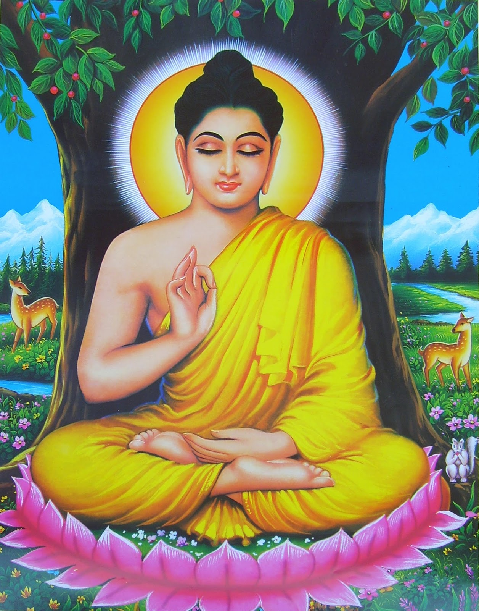

Buddha Puja - Worship of Lord Buddha
Buddha Puja: Worship of Lord Buddha
Buddha Puja is a sacred Buddhist ritual dedicated to the worship of Lord Buddha, believed to bring wisdom, peace, and enlightenment to practitioners.
What is Buddha Puja?
Buddha Puja is a spiritual practice in Buddhism where devotees honor Lord Buddha, the enlightened one. Buddha is revered for his teachings on suffering, the path to enlightenment, and the importance of compassion. Worshipping Buddha is said to help cultivate peace, wisdom, and compassion in one's life.
Why Do We Perform Buddha Puja?
- Spiritual Growth: It helps in attaining spiritual enlightenment and inner peace.
- Emotional Healing: Reduces stress, anxiety, and emotional suffering.
- Wisdom: Enhances understanding and the wisdom of Buddha's teachings.
- Peace: Promotes mental peace and tranquility in daily life.
- Compassion: Encourages a compassionate and loving mindset towards others.
Benefits of Buddha Puja
- Inner Peace: Helps attain peace of mind and calmness.
- Spiritual Healing: Fosters spiritual growth and healing from mental and emotional disturbances.
- Wisdom: Enhances insight and wisdom based on the Buddha’s teachings.
- Emotional Balance: Brings balance to the emotional state of a person.
- Health and Well-being: Promotes physical and mental health.
How to Perform Buddha Puja (Step-by-Step)
Buddha Puja can be performed in a serene and peaceful setting. It is best done during dawn or dusk, or on full moon days. Here's a simple step-by-step guide:
- Preparation: Set up an altar with an image or statue of Lord Buddha, flowers, incense, and a lighted lamp or candle.
- Meditation: Sit in a comfortable position, focusing on your breath and seeking peace within.
- Offerings: Offer fresh flowers, incense, and light a lamp or candle to honor Lord Buddha.
- Chant Buddha Mantras: Recite mantras like "Om Mani Padme Hum" or "Namo Amitabha Buddha" to invoke blessings.
- Prayers: Offer prayers for peace, wisdom, and compassion for all living beings.
- Dedicate the Merit: Dedicate the merit of the puja for the benefit of all beings, wishing for their happiness and liberation.
- Prasad: Offer or consume prasad (fruits or sweets) as a sign of gratitude and blessing.
- Regular Practice: It is advised to practice Buddha Puja regularly for sustained peace and spiritual benefits.
Conclusion
Buddha Puja is an important practice in Buddhism, helping followers to cultivate peace, wisdom, and compassion. Regularly performing Buddha Puja can lead to spiritual growth, healing, and the development of a peaceful and enlightened mind.